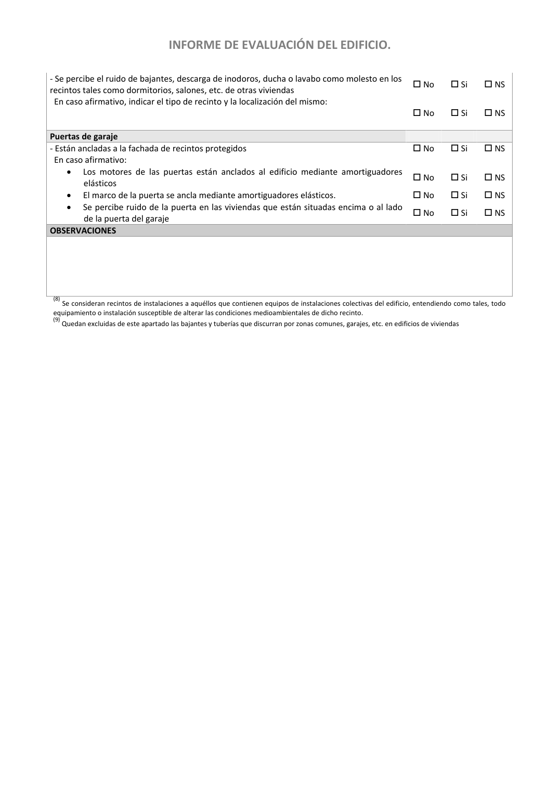
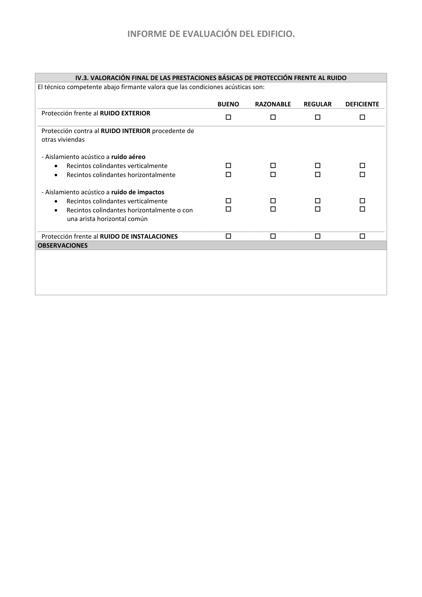
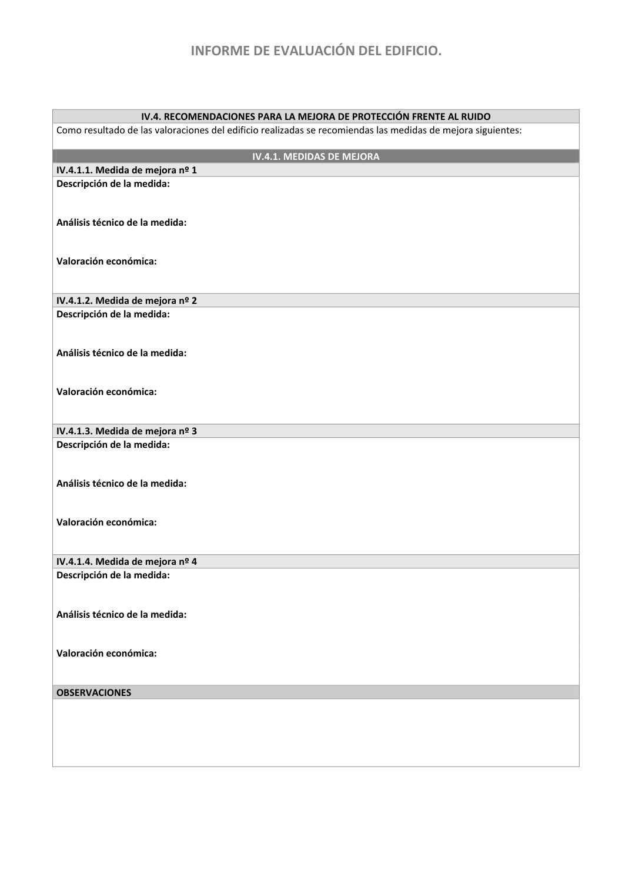

<!doctype html>
<html lang="es"><head><meta charset="utf-8">
<meta name="viewport" content="width=device-width, initial-scale=1">
<title>Anejo 1. Parte IV del Informe de Evaluación del Edificio / INFORME DE EVALUACIÓN DEL EDIFICIO.</title><link rel="stylesheet" href="../estilo.css">
</head><body>
<nav><a href="../index.html">Índice</a> › <a href="../doc/guia-pdf-a5d4ef5252ba-2016-11-01-813669d3066c.html">GUIA</a></nav>

<h1>Anejo 1. Parte IV del Informe de Evaluación del Edificio / INFORME DE EVALUACIÓN DEL EDIFICIO.</h1>
<header class="meta"><p><strong>IEE 2016</strong> · edición 2016-11-01 · capa guia</p>
<p>Documento <code>GUIA-PDF-a5d4ef5252ba</code> · SHA-256 del PDF <code>813669d3066c0ff79457d57b80b0512a4fbb248bc5db1f7baf473c369a064738</code></p>
<p><a href="../../contenido/docs/GUIA-PDF-a5d4ef5252ba/2016-11-01__813669d3066c/fuente.pdf">Copia fiel del PDF fuente</a> · <a href="https://www.codigotecnico.org/pdf/Documentos/HR/IEE_2016.pdf">Fuente oficial</a></p>
<p><a href="https://www.codigotecnico.org/Guias/GuiaIEE_HR.html">Ficha de la disposición en la fuente oficial</a></p>
<div class="cita"><p><a href="../../contenido/docs/GUIA-PDF-a5d4ef5252ba/2016-11-01__813669d3066c/fuente.pdf#page=2">Créditos y autoría en el PDF fuente</a>. Reproducción con cita de fuente y autores.</p>
<p>Permiso literal: Se permite la reproducción del contenido total o parcial de esta Guía siempre y cuando se haga citando la fuente original.</p>
<details><summary>Leer los créditos completos y la autoría</summary><pre class="literal">                    Guía para la cumplimentación de la parte IV del IEE. Condiciones básicas de protección frente al ruido


Dirección y coordinación

Luis Vega Catalán

Mª Cristina Colomo Fernández

Eduardo González de Prado

Dirección General de Arquitectura, Vivienda y Suelo. Ministerio de Fomento

Mª Teresa Carrascal García

Instituto de Ciencias de la Construcción Eduardo Torroja. IETcc- CSIC


Autores

Mª Teresa Carrascal García

Amelia Romero Fernández

Mª Belén Casla Herguedas

Unidad de Calidad en la Construcción del Instituto de Ciencias de la Construcción Eduardo Torroja IETcc- CSIC


Se agradece la colaboración de


Belén Delgado Giménez

Fundación FIDAS

Alberto Esteban González

C.T.O. Estudios y proyectos – Gikesa

Giovanni Muzio

C.T.O. Estudios y proyectos

Francisco Labastida Azemar

Arquitecto, asesor CSCAE

Pedro F. Nogueira López

Universidad de A Coruña

Alejandro Sansegundo Sierra

Acústica SanSegundo


Esta Guía para la cumplimentación de la parte IV del IEE. Condiciones básicas de protección frente al ruido, nace en el marco del

convenio de colaboración llevado a cabo entre el Ministerio de Fomento y el Instituto de Ciencias de la Construcción Eduardo Torroja y

forma parte de la estrategia de este Ministerio de generar una serie de documentos de ayuda que faciliten la aplicación de la normativa

de la edificación y que en este caso concreto, ofrezca a los técnicos criterios para poder realizar una evaluación del estado inicial de las

edificaciones en lo referente a las condiciones acústicas de las viviendas existentes y plantear medidas que incrementen su confort

acústico.


En la redacción de este documento se ha utilizado algunos de los contenidos y de las figuras de la Guía de aplicación del DB HR

Protección frente al ruido. Dicha guía puede consultarse en:

http://www.codigotecnico.org/index.php/menu-documentos-complementarios/menu-guia-aplicacion-db-hr


Se permite la reproducción del contenido total o parcial de esta Guía siempre y cuando se haga citando la fuente original.


                                                2</pre></details></div>
<div class="aviso"><strong>Alcance y límites</strong><ul><li>Extracción automática sin revisión técnica humana completa. Contraste tablas, fórmulas, notas y excepciones con el PDF. La edición disponible no determina la vigencia ni la aplicabilidad a un proyecto.</li><li>Guia o documento divulgativo; no es texto normativo.</li><li>Extracción automática; el cotejo humano está pendiente.</li><li>Semántica y tablas no equivalen a validación exhaustiva.</li></ul></div></header>
<div class="cita">ID técnico a0033 · páginas físicas <a href="../pagina/guia-pdf-a5d4ef5252ba-2016-11-01-813669d3066c__p0048.html">48</a>, <a href="../pagina/guia-pdf-a5d4ef5252ba-2016-11-01-813669d3066c__p0049.html">49</a>, <a href="../pagina/guia-pdf-a5d4ef5252ba-2016-11-01-813669d3066c__p0050.html">50</a></div>
<nav><a href="guia-pdf-a5d4ef5252ba-2016-11-01-813669d3066c__a0032.html">← a0032</a> · <a href="guia-pdf-a5d4ef5252ba-2016-11-01-813669d3066c__a0034.html">a0034 →</a></nav>
<p>Formatos: <a href="../../contenido/docs/GUIA-PDF-a5d4ef5252ba/2016-11-01__813669d3066c/apartado/a0033__informe-de-evaluacion-del-edificio.json">JSON del segmento</a> · <a href="../../contenido/docs/GUIA-PDF-a5d4ef5252ba/2016-11-01__813669d3066c/apartado/a0033__informe-de-evaluacion-del-edificio.md">Markdown</a></p>
<pre class="literal">INFORME DE EVALUACIÓN DEL EDIFICIO.
- Se percibe el ruido de bajantes, descarga de inodoros, ducha o lavabo como molesto en los
recintos tales como dormitorios, salones, etc. de otras viviendas
 No
 Si
 NS
En caso afirmativo, indicar el tipo de recinto y la localización del mismo:
 No
 Si
 NS
Puertas de garaje
- Están ancladas a la fachada de recintos protegidos
 No
 Si
 NS
En caso afirmativo:
•
Los motores de las puertas están anclados al edificio mediante amortiguadores
elásticos
 No
 Si
 NS
•
El marco de la puerta se ancla mediante amortiguadores elásticos.
 No
 Si
 NS
•
Se percibe ruido de la puerta en las viviendas que están situadas encima o al lado
de la puerta del garaje
 No
 Si
 NS
OBSERVACIONES
(8) Se consideran recintos de instalaciones a aquéllos que contienen equipos de instalaciones colectivas del edificio, entendiendo como tales, todo
equipamiento o instalación susceptible de alterar las condiciones medioambientales de dicho recinto.
(9) Quedan excluidas de este apartado las bajantes y tuberías que discurran por zonas comunes, garajes, etc. en edificios de viviendas

INFORME DE EVALUACIÓN DEL EDIFICIO.
IV.3. VALORACIÓN FINAL DE LAS PRESTACIONES BÁSICAS DE PROTECCIÓN FRENTE AL RUIDO
El técnico competente abajo firmante valora que las condiciones acústicas son:
BUENO
RAZONABLE
REGULAR
DEFICIENTE
Protección frente al RUIDO EXTERIOR




Protección contra al RUIDO INTERIOR procedente de
otras viviendas
- Aislamiento acústico a ruido aéreo
•
Recintos colindantes verticalmente




•
Recintos colindantes horizontalmente




- Aislamiento acústico a ruido de impactos
•
Recintos colindantes verticalmente




•
Recintos colindantes horizontalmente o con
una arista horizontal común




Protección frente al RUIDO DE INSTALACIONES




OBSERVACIONES

INFORME DE EVALUACIÓN DEL EDIFICIO.
IV.4. RECOMENDACIONES PARA LA MEJORA DE PROTECCIÓN FRENTE AL RUIDO
Como resultado de las valoraciones del edificio realizadas se recomiendas las medidas de mejora siguientes:
IV.4.1. MEDIDAS DE MEJORA
IV.4.1.1. Medida de mejora nº 1
Descripción de la medida:
Análisis técnico de la medida:
Valoración económica:
IV.4.1.2. Medida de mejora nº 2
Descripción de la medida:
Análisis técnico de la medida:
Valoración económica:
IV.4.1.3. Medida de mejora nº 3
Descripción de la medida:
Análisis técnico de la medida:
Valoración económica:
IV.4.1.4. Medida de mejora nº 4
Descripción de la medida:
Análisis técnico de la medida:
Valoración económica:
OBSERVACIONES</pre>
<figure><a href="../../contenido/docs/GUIA-PDF-a5d4ef5252ba/2016-11-01__813669d3066c/figura/p0048.png"></a><figcaption>Página visual 48, para contrastar fórmulas, tablas y figuras.</figcaption></figure>
<figure><a href="../../contenido/docs/GUIA-PDF-a5d4ef5252ba/2016-11-01__813669d3066c/figura/p0049.png"></a><figcaption>Página visual 49, para contrastar fórmulas, tablas y figuras.</figcaption></figure>
<figure><a href="../../contenido/docs/GUIA-PDF-a5d4ef5252ba/2016-11-01__813669d3066c/figura/p0050.png"></a><figcaption>Página visual 50, para contrastar fórmulas, tablas y figuras.</figcaption></figure>
<footer>Generado estáticamente desde el corpus normalizado; sin JavaScript ni servicios externos. El HTML es una vista reproducible; conserve la fuente y la edición al citar.</footer>
</body></html>
